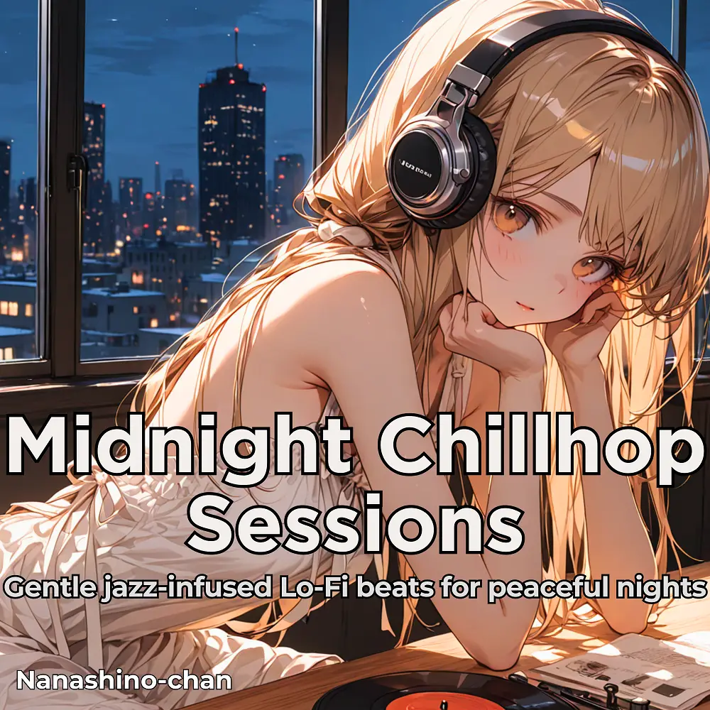

Lo-Fi · Jazz
Lo-Fi Dreams: Jazz Beats for Study & Sleep
Nanashino-chan
Nanashino-chanの「Lo-Fi Dreams: Jazz Beats for Study & Sleep」。Lo-Fi / Jazzを楽しめる全20曲のインストゥルメンタル作品です。「Opening Window / Soft Light Swing」などを収録。気になる曲を試聴して、配信サービスでお気に入りを見つけてください。
2025-06-14 リリース · 20 曲 · Instrumental
アルバムを試聴
気になる音楽を、ここから。
曲を選ぶまでジャケットを表示します。試聴にはYouTubeを使用します。
YOUTUBE PREVIEW
試聴する曲を選んでください
曲を選ぶまでジャケットを表示します。試聴にはYouTubeを使用します。
再生できない場合は、配信サービスでアルバムや曲を開いてください。
配信サービスでアルバムを探す
「検索」のリンクは検索結果を開きます。サービス内でアルバムや曲を選択してください。
収録曲一覧 20
- 01Opening Window
- 02Soft Light Swing
- 03Coffee Break Harmony
- 04Midday Mood
- 05Quiet Side Streets
- 06Warm Breeze
- 07Afternoon Sketch
- 08Faded Jazz Memories
- 09Pastel Reflections
- 10City Glow
- 11Moments in Blue
- 12Raindrops & Chords
- 13Calm Conversations
- 14Canvas of Sound
- 15Evening Ease
- 16Streetlamp Waltz
- 17Late Night Letters
- 18Moonlight in Motion
- 19Good Night Groove
- 20Jazz Afterglow
SNSで使いたい音源を探す
「Nanashino-chan ＋ 曲名」をコピーして、SNSアプリの音源検索に貼り付けてください。音源の表示は地域やアカウントにより異なります。コピー機能は利用許諾を付与するものではありません。